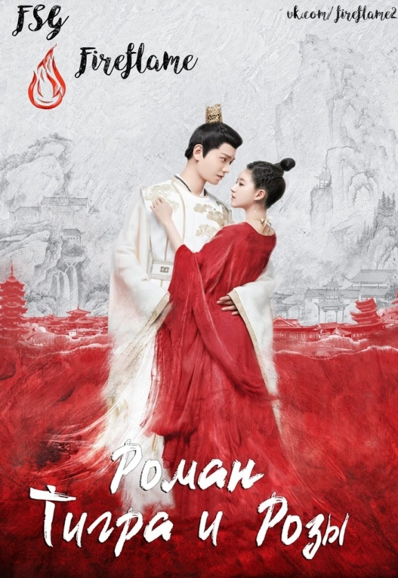

Роман Тигра и Розы
Главная героиня оказывается перенесенной на страницы своей истории.
Сяо Цянь стала Третьей Принцессой, Чэнь Цянь Цянь, незначительным
побочным персонажем с ужасной репутацией и короткой
продолжительностью жизни.

Такая девушка, как я
Бань Хуа (Гуань Сяо Тун) - девушка, известная своей прямолинейностью
и дерзостью, из-за этого ей трижды отказывали в браке. Однако на
самом деле она добрая и чуткая. Однажды она случайно понимает, что
обладает способностью предсказывать будущее через сны. Бань Хуа
решает использовать это, чтобы помочь своей семье избежать гибели.

Императрица Ки
Корейская дорама «Императрица Ки» – это историческая сага о жизни Ки
Хван Ку, супруги Тогон-Тэмура – последнего императора монгольской
империи Юань. Борьба двух сильных личностей за сердце главной
героини.

Ки Новая жизнь начинается
На выборы невесты для молодого господина в Синьчуан приезжают
девушки со всей Поднебесной, желая устроить свое будущее. И только
Ли Вэй (Тянь Си Вэй) прилагает все усилия, чтобы ее не выбрали, она
хочет просто жить комфортно и спокойно в своем родном городе. Но
неожиданно между ней и шестым молодым господином Инь Чжэном (Бай
Цзин Тин), который старается держаться в тени и ничем не выделяться,
завязываются отношения.

W: Меж двух миров
Главная героиня фантастической истории «W: Меж двух миров» О Ён Чжу
оказывается втянута в выдуманный мир, созданный ее отцом. О Сон Мо
уже десять лет выпускает популярный веб-комикс «W», главным героем
которого является молодой мужчина Кан Чоль. Однажды автор исчезает,
а его дочь приходит в его кабинет, где находит заключительную серию
комикса. Но неожиданно картинка оживает, и героиня становится
участницей популярной в реальном мире истории.
Силачка До Бон Сун
Дорама расскажет о приключениях отважной девушки со
сверхчеловеческой силой. Бон Сун всегда говорили, что в случае
злоупотребления её удивительные способности пропадут раз и навсегда.
Все злоключения девушки начанаются с того момента, как До Бон Сун
храбро дает отпор членам банды, которые угрожают ей. Свидетелем этой
ситуации становится Ан Мин Хёк, который после произошедшего подходит
к Бон Сун с интересным предложением.